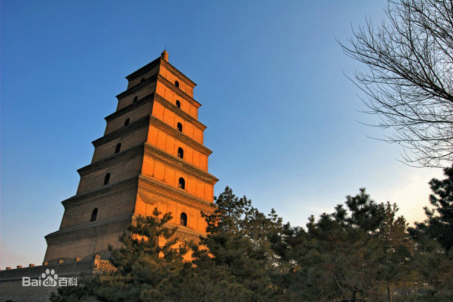
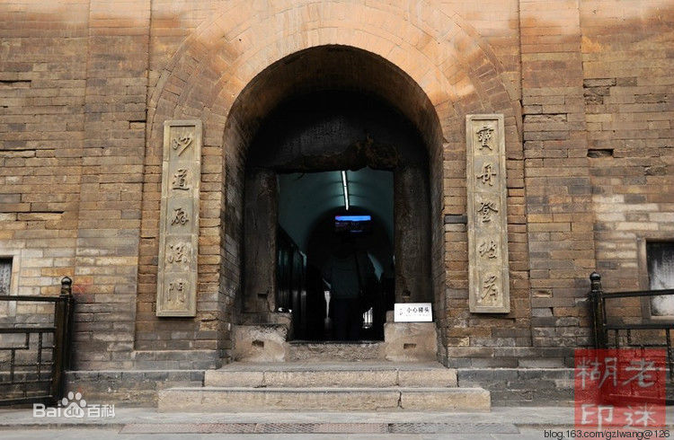
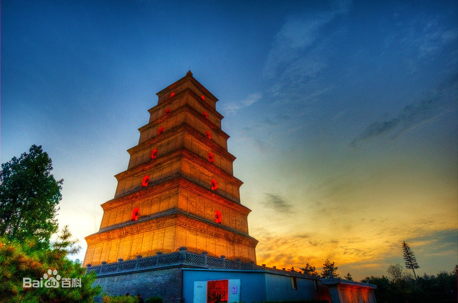

大雁塔
- 
- 
- 
大雁塔位于唐长安城晋昌坊（今陕西省西安市南）的大慈恩寺内，又名“慈恩寺塔”。唐永徽三年（652年），玄奘为保存由天竺经丝绸之路带回长安的经卷佛像主持修建了大雁塔，最初五层，后加盖至九层，再后层数和高度又有数次变更，最后固定为今天所看到的七层塔身，通高64.517米，底层边长25.5米。 大雁塔作为现存最早、规模最大的唐代四方楼阁式砖塔，是佛塔这种古印度佛寺的建筑形式随佛教传入中原地区，并融入华夏文化的典型物证，是凝聚了中国古代劳动人民智慧结晶的标志性建筑。 1961年3月4日，国务院公布大雁塔为第一批全国重点文物保护单位 。2014年6月22日，在卡塔尔多哈召开的联合国教科文组织第38届世界遗产委员会会议上，大雁塔作为中国、哈萨克斯坦和吉尔吉斯斯坦三国联合申遗的“丝绸之路：长安-天山廊道的路网”中的一处遗址点成功列入《世界遗产名录》。